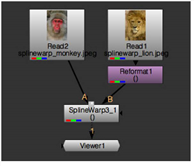
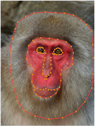
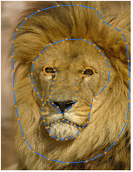
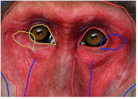
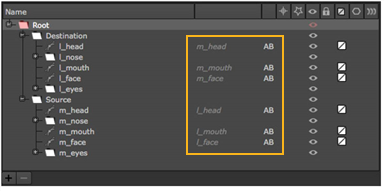
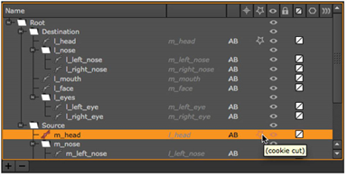
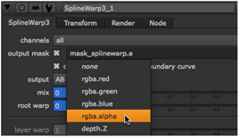
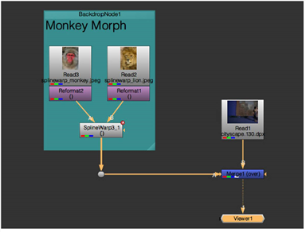

Open topic with navigation
Morphing One Image into Another Using the SplineWarp Node
To morph one image into another using the SplineWarp node:
|
1.
|
Select Image > Read to import the two images you want to morph together. |
|
3.
|
Select Transform > SplineWarp to insert a SplineWarp node into your script. |
|
4.
|
Connect the source image (the image you want to turn into another image) to the A input of the SplineWarp node, and the destination image (the image you want the source image turned into) to the B input. Attach a Viewer to the SplineWarp node. |

|
5.
|
In the SplineWarp node’s controls, switch output between A and B or click  and and  in the Viewer tools. You should see both images in the Viewer. in the Viewer tools. You should see both images in the Viewer. |
|
6.
|
Identify some features that are similar in the source and the destination images. For example, if you are morphing together images of people or animals, these features might include their eyes, noses and mouths as well as the outlines of their faces and heads. |

You may find it useful to name the entries in the curves list, left_eye, right_eye, etc. Meaningful names can help you later on when you’re using the Join tool to link the source and destination shapes.
|
8.
|
Switch to input B and draw curves in a similar fashion. Draw the same amount of curves, on similar features, to make the morph as accurate as possible. |

|
9.
|
Switch the Viewer to output AB morph  , which displays both sets of curves, and activate Join in the Viewer tools. , which displays both sets of curves, and activate Join in the Viewer tools. |
|
10.
|
Work through the A input shapes, linking them to their B input counterparts. Try to link similar points, such as the corners of the eyes or the side of the mouth. |
NOTE: You can invert the source and destination shapes using the Reverse tool.

As you join shapes, the curves list updates showing the linked pairs.

|
11.
|
Scrub to the frame where you want the morph to begin. Bring the mix slider down to 0 (input A). Click on the animation button  and select Set key. and select Set key. |
|
12.
|
Set keyframes for root warp in the same way. |
|
13.
|
If you’re using stills, as in this example, scrub the playhead to the number of frames required for the morph. Otherwise, scrub to the end of the sequence. |
|
14.
|
Set the mix and root warp sliders to 1 (input B). |
|
15.
|
Press Q in the Viewer to disable the spline overlay and press play. |
Input A is morphed into input B.
Using the cookie-cutter to create traveling masks
The curves list cookie-cutter is primarily designed to overlay a morph between two images, which may not include an alpha channel, on top of a sequence by creating a “traveling mask” automatically between closed cookie-cutter shapes.
For example, the monkey-lion morph demonstrated previously could be merged with a sequence, replacing a face with a monkey face that is morphed into a lion over time.
NOTE: The cookie-cutter only works with closed shapes from the curves list.
|
1.
|
Designate a pair of closed shapes as cookie-cutters by clicking the cookie-cutter icon in the curves list. |

In this instance, enabling cookie-cut for the monkey’s head, m_head, also designates the lion’s head, l_head, as a cookie-cutter shape.
|
2.
|
Use the output mask dropdown to select the channel where the traveling mask is stored, or use the mask_splinewarp.a default. |

|
4.
|
Finally, merge the output of the SplineWarp node with your sequence. A simple script might appear as follows: |

You can confirm the presence of the traveling mask by selecting the output mask channel in the Viewer dropdown and then pressing M to display the Mat channel. You should see an automatically created mask that matches the morphed shape.